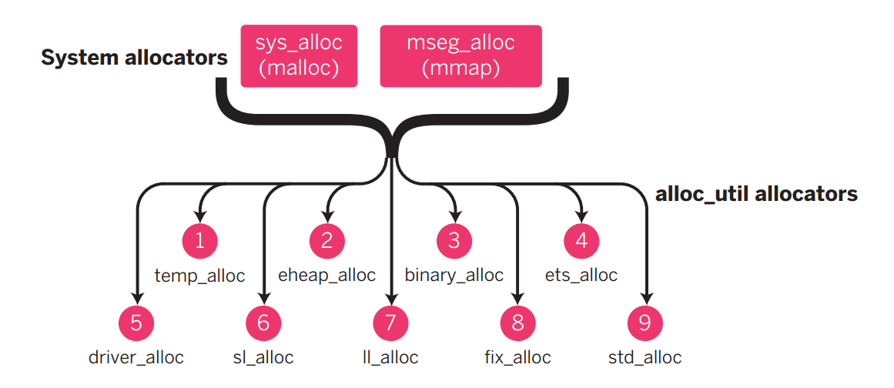

系统自带的分配器存在的缺点：
- 小内存分配效率低。
- 所有数据同样的分配策略，增加碎片。
- 缺乏跨平台细粒度的统计
+Meadisable erts allocators and use malloc for everything- 多核内存管理更加重要也更加复杂
概念
- Block: 虚拟机请求的一块内存区域。
- Carrier: 包含一个或多个Block的内存区域，分为sbc，mbc。正常情况下大部分数据位于mbc。
- Single Block Carrier sbc
- 大的block进入sbc
+M<S>sbct默认512k- 可以通过erlang:system_info(allocator)查看各个allocator的配置参数
- Multiblock Carrier mbc
+M<S>smbcssmallest Multiblock carrier size+M<S>lmbcslargest multiblock Carrier size+M<S>mbcgsmultiblock Carrier grow stage- 如果增加sbct一般也会相应增大smbcs和lmbcs
- 通过mseg_alloc分配的mbc的大小
- smbcs+nc*(lmbcs-smbcs)/mbcgs (nc <= mbcgs)
- lmbcs (nc > mbcgs)
- 通过sys_alloc分配的mbc
- least number of multiple of ycs satisfying the request
- Single Block Carrier sbc
各种分配器

文件erl_alloc.types中列举了所有的分配器类型以及不同数据对应的分配器类型。
ERTS中一共定义了11中不同的分配器，包括最基本的sys_alloc以及mseg_alloc。
详情见下表。Flag是启动ERTS时修改分配器配置参数的标志。
| Name | Description | C-name | Type-name | Flag |
|---|---|---|---|---|
| Basic allocator | malloc interface | sys_alloc | SYSTEM | Y |
| Memory segment allocator | mmap interface | mseg_alloc | - | M |
| Temporary allocator | Temporary allocations | temp_alloc | TEMPORARY | T |
| Heap allocator | Erlang heap data | eheap_alloc | EHEAP | H |
| Binary allocator | Binary data | binary_alloc | BINARY | B |
| ETS allocator | ETS data | ets_alloc | ETS | E |
| Driver allocator | Driver data | driver_alloc | DRIVER | R |
| Short lived allocator | Short lived memory | sl_alloc | SHORT_LIVED | S |
| Long lived allocator | Long lived memory | ll_alloc | LONG_LIVED | L |
| Fiexed allocator | Fiexed size data | fix_alloc | FIXED_SIZE | F |
| Standard allocator | For most other data | std_alloc | STANDARD | D |
- eheap，binary, driver, ets
- temporary
- c function scope
- temp gc rootset
- dist msg decode
- short lived
- ets match specs
- short timers
- fd select list
- standard lived
- links
- monitors
- long lived
- code
- atoms
- fix size
- process control block
- port control block
分配策略(as)
allocation strategy，从mbc中找到空闲block的策略。
- Block Oriented
- best fit: 找到满足要求的最小block，二叉平衡树，logN
- address order best fit
- address order first fit
- good fit
- a fit
- Carrier Oriented
- address order first fit carrier best fit
- address order first fit carrier address order best fit
Carrier分配器
- mseg alloc
- /dev/zero mmap, munmap, mremap
- cache freeed carries
- sys alloc
- maps to malloc, free
- multiple of +Muycs to help avoid fragmentation
- used for main carrier allocaton
统计
erlang:system_info(allocator)
- sys_alloc mseg_alloc
- eheap_alloc, ets_alloc, binary_alloc, driver_alloc
- temp_alloc, sl_alloc, std_alloc, ll_alloc, fix_alloc
erlang:system_info({allocator, Type})
主要配置参数
- sbct
- mbc allocation strategy
实例
问题一: large binary
- 现象：性能低下，通过strace发现malloc比mmap多得多。
- 原因： 统计发现sbcs carrier_size 比 mbcs carrier_size大得多，大量binary放到了sbc。
- 解决方案：
- 增大
+MBsbct, 同时增大+MBlmbcs和+MBsmbcs
- 增大
问题二：碎片问题
这是lyse作者在实际项目中遇到的问题，详情见作者博客logplex down the rabbit hole。
- 现象：
- erlang:memory(total) 7GB
- top 显示 15GB
- 崩溃日志：ets_alloc: Cannot allocate XYZ bytes of memory. Abnormal termination
- 原因： Carrier中残留的block导致Carrier无法回收
- 方案：减少碎片
+MBas aobfaddress order best fit 更集中- 减小
+MBlmbcs来分配更多的小mbc，更容易被回收
参考文档
- Memory Management Battle Stories by lukas larsson
- http://erlang.org/doc/man/erts_alloc.html
- logplex down the rabbit hole
- The beam book